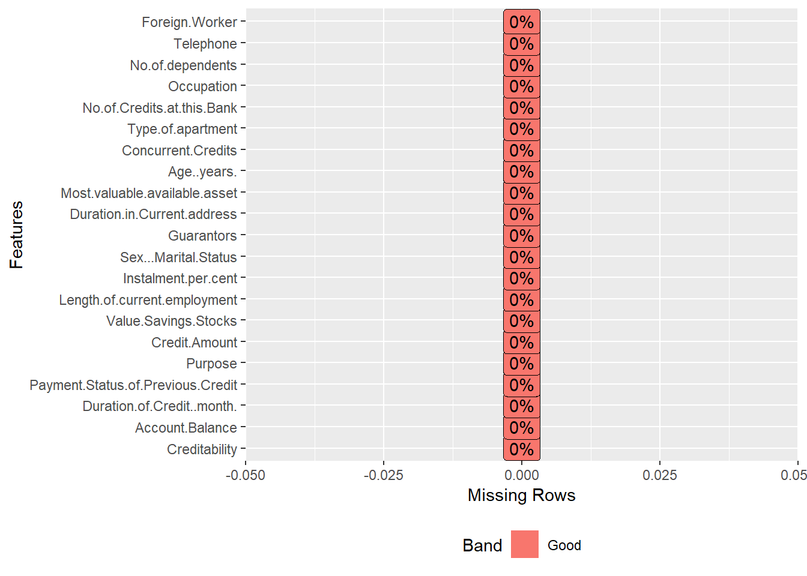
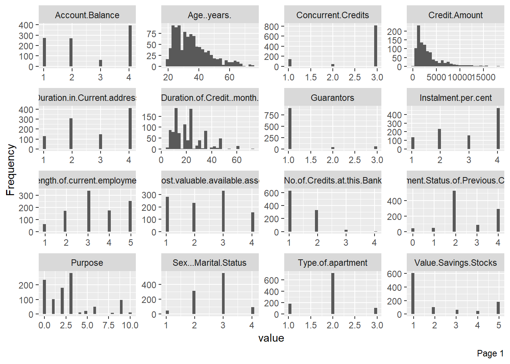
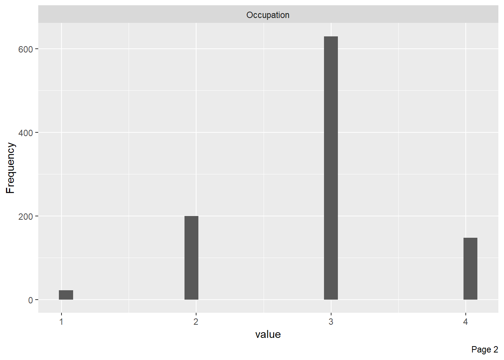
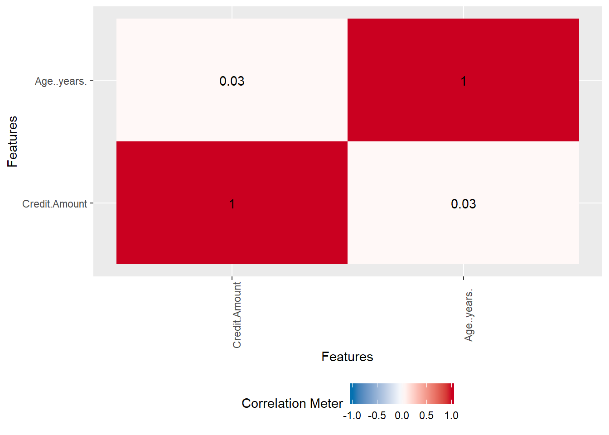
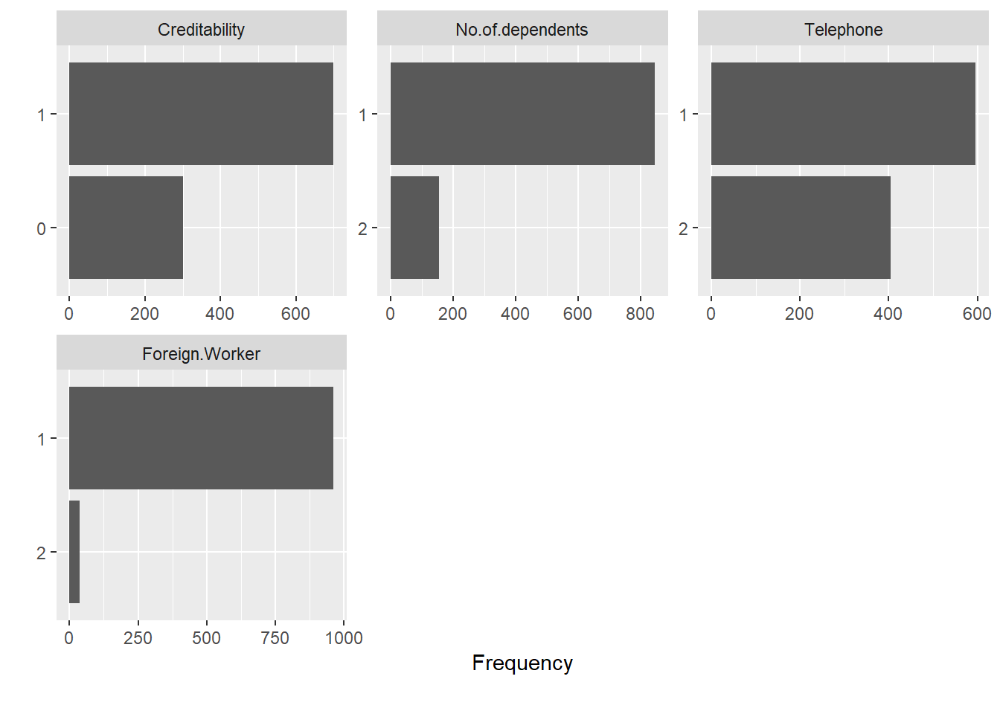

Sección 17 Posibles soluciones
17.1 Ejercicio 1
17.1.1 Enunciado
Utilizando R, calcular el valor presente de los siguientes flujos de caja:
- Año 1: -300
- Año 2: +100
- Año 3: +250
Tasa de descuento: 7.0% anual.
17.1.2 Posible solución
a <- -300
b <- +100
c <- +250
d <- 7.0/100 # 7.0%
e <- (a/(1+d)^1) + (b/(1+d)^2) + (c/(1+d)^3)
e # 11.04## [1] 11.04451También es posible solucionar este ejercicio utilizando p.ej. el paquete “FinCal” de R, de la siguiente forma:
library(FinCal)## Warning: package 'FinCal' was built under R version 3.5.3##
## Attaching package: 'FinCal'## The following object is masked from 'package:quantmod':
##
## lineChart?npv # net present value
tasa <- d
flujo.de.caja <- c(0, a, b, c) # 0 para el año 0
f <- npv(r = tasa, cf = flujo.de.caja)
f## [1] 11.0445117.2 Ejercicio 2
17.2.1 Enunciado - parte a
- Crear un vector “vector1” con los números “3” y “4” y convertirlo a un data frame y asignar el resultado a una variable “data1”
- Mostrar el nombre de las columnas del data frame “data1”
- Acceder al primer elemento de este data frame (3) y mostrarlo en la pantalla
17.2.2 Posible solución
vector1 <- c(3,4)
vector1## [1] 3 4class(vector1)## [1] "numeric"data1 <- as.data.frame(vector1) # convierte a un data frame
data1 # observe el título de la primera columna del data frame## vector1
## 1 3
## 2 4class(data1)## [1] "data.frame"colnames(data1)## [1] "vector1"data1[1, ]## [1] 317.2.3 Enunciado - parte b
- Crear un vector “vector2” con los siguientes tres caracteres “3”, “4” y “5” y convertir este vector a un data frame y asignar el resultado a una variable “data2”
- Mostrar el resultado de la conversión, utilizando la función class()
17.2.4 Posible solución
vector2 <- c("3", "4", "5")
class(vector2)## [1] "character"data2 <- as.data.frame(vector2)
class(data2)## [1] "data.frame"17.2.5 Enunciado - parte c
- Ahora, convertir el contenido de este data frame “data2” (caracteres) al tipo de dato “numeric”. Es decir, convertir el contenido a tres números y asignar el resultado a una variable “data3”
- Mostrar el resultado de la conversión, utilizando la función class()
17.2.6 Posible solución
data3 <- as.numeric(data2[,1])
class(data3)## [1] "numeric"data3## [1] 1 2 317.2.7 Enunciado - parte d
- Crear un vector “vector3” con los 6 estratos (seis categorías: 1 a 6), como se utilizan p.ej. en Colombia. Es decir, crear este vector3 de tipo de dato “factor”
- Convertir el contenido de este vector al tipo de dato “numeric”. Es decir, convertir el contenido a seis números y asignar el resultado a una variable “data4”
- Mostrar el resultado de la conversión, utilizando la función class()
17.2.8 Posible solución
vector3 <- as.factor(c(1:6))
class(vector3)## [1] "factor"vector3## [1] 1 2 3 4 5 6
## Levels: 1 2 3 4 5 6data4 <- as.numeric(vector3)
class(data4)## [1] "numeric"data4## [1] 1 2 3 4 5 617.2.9 Enunciado - parte e
- Crear un data frame “df10” con dos columnas. La primera columna “x” debe contener los datos 1, 2 y 3 y la segunda “y” los datos 4, 5 y 6. Sin embargo, los tres datos de la primera columna deben ser del tipo de dato “numeric” (numérico). Mientras los tres datos de la segunda columna deben ser del tipo de dato “factor” (categórica)
- Ahora convertir los valores de la segunda columna (y), del tipo de dato “factor” a “numeric”
- Mostrar que los valores de la segunda columna “y” ahora realmente son del tipo de dato “numeric”
17.2.10 Posible solución
x <- 1:3
y <- as.factor(c(4:6))
df10 <- data.frame(x,y)
class(df10)## [1] "data.frame"df10## x y
## 1 1 4
## 2 2 5
## 3 3 6#conversión de factor a númerico
#df10$y <- as.numeric(df10$y)
#df10
#Ojo: ¿Qué pasó aquí?
# Respuesta: Si se utiliza la función as.numeric para un factor, esto convertirá los niveles a numéricos, no a los valores reales. Por lo tanto, se necesita adicionalmente la función as.character para convertir primero el factor a character y luego as.numeric
df10$y <- as.numeric(as.character(df10$y))
class(df10$y)## [1] "numeric"df10$y## [1] 4 5 617.3 Ejercicio 3
17.3.1 Enunciado
Crear un archivo de tipo CSV con los siguientes datos, distribuidos en cinco filas y 4 columnas, y seperados por punto y coma (;):
- #;Estrato;Ingresos;Nombre
- 1;1;100.0;Jaime
- 2;2;150;María
- 3;2;140;Paula
4;5;90;Cristina
- Cargar estos datos desde el archivo csv a una variable “dataset10” en R / RStudio. Los datos de las primeras tres columnas deben ser numéricos (int o num) y de la última de tipo “character” (chr)
- Mostrar la estructura del “dataset10” en la pantalla
Cambiar el nombre de la primera columna al texto “numero”
17.3.2 Posible solución
dataset10 <- read.csv('ejercicio3.csv', sep = ";", header = TRUE, stringsAsFactors = FALSE)
str(dataset10)## 'data.frame': 4 obs. of 4 variables:
## $ X. : int 1 2 3 4
## $ Estrato : int 1 2 2 5
## $ Ingresos: num 100 150 140 90
## $ Nombre : chr "Jaime" "María" "Paula" "Cristina"names(dataset10)[1] <- "numero"
str(dataset10)## 'data.frame': 4 obs. of 4 variables:
## $ numero : int 1 2 3 4
## $ Estrato : int 1 2 2 5
## $ Ingresos: num 100 150 140 90
## $ Nombre : chr "Jaime" "María" "Paula" "Cristina"17.4 Ejercicio 4
17.4.1 Enunciado
- Analizar el paquete “DataExplorer” de R para explorar datos
Cargar los datos de la siguiente forma:
- url=“http://freakonometrics.free.fr/german_credit.csv”
dataset <- read.csv(url, header = TRUE, sep = “,”)
- Luego, utilizar el paquete “DataExplorer”, utilizando la función “plot_str()”
- Visualizar los valores faltantes, utilizando una función adecuada del paquete “DataExplorer”
- Crear histogramas para (las variables continúas d)el “dataset”, utilizando una función adecuada del paquete “DataExplorer”
- Crear un data frame “dataset2”, que contiene los valores de las columnas “Age..years.” y “Credit.Amount” del dataset
- Visualizar las correlaciones entre los valores de las columnas “Age..years.” y “Credit.Amount” del dataset2
Aplciar la función plot_bar del paquete “DataExplorer” al dataset
17.4.2 Posible solución
url="http://freakonometrics.free.fr/german_credit.csv"
dataset <- read.csv(url, header = TRUE, sep = ",")
library(DataExplorer)## Warning: package 'DataExplorer' was built under R version 3.5.3plot_str(dataset)
plot_missing(dataset)
plot_histogram(dataset)
col <- c("Credit.Amount", "Age..years.")
dataset2 <- dataset[col]
plot_correlation(dataset2)
plot_bar(dataset)
17.5 Ejercicio 5
17.5.1 Enunciado
- Cargar el paquete “tidyverse”
- Utilizar el conjunto de datos “iris”, que se instaló con R: data(iris)
- Ver la siguiente descripción al respecto: https://es.wikipedia.org/wiki/Conjunto_de_datos_flor_iris
- Mostrar las primeras 5 filas de “iris” en la pantalla
- Agrupar los datos de iris por la columna “Species” y asignar el resultado a una variable “iris.por.species”, utilizando tidyverse
- Mostrar las últimas 3 filas de “iris.por.species”
- Agregar una columna a “iris.por.species”, donde se muestra el valor promedio para los valores de la columna “Sepal.Length”, utilizando tidyverse
17.5.2 Posible solución
library(tidyverse) data(iris) head(iris, 5)
iris.por.species <- iris %>% group_by(Species) tail(iris.por.species, 3)
iris.por.species <- iris.por.species %>% summarize(promedio = mean(Sepal.Length)) tail(iris.por.species, 3)
17.6 Ejercicio 6
17.6.1 Enunciado
- Utilizar el conjunto de datos “iris”, que se instaló con R: data(iris)
- Ver la siguiente descripción al respecto: https://es.wikipedia.org/wiki/Conjunto_de_datos_flor_iris
- Mostrar las primeras 5 filas de “iris” en la pantalla
- Utilizando la función apply, calcular el promedio de cada columna del dataset “iris”, que contiene números
- Realizar el mismo cálculo, utilizando la función lapply (en lugar de apply())
- Con base en los resultados obtenidos, explicar la diferencia entre apply y lapply
- Ahora bien, realizar el mismo cálculo (promedio de las columnas), pero utilizando un ciclo (bucle), aplicando la función for()
17.6.2 Posible solución
data(iris)
head(iris, 5)## Sepal.Length Sepal.Width Petal.Length Petal.Width Species
## 1 5.1 3.5 1.4 0.2 setosa
## 2 4.9 3.0 1.4 0.2 setosa
## 3 4.7 3.2 1.3 0.2 setosa
## 4 4.6 3.1 1.5 0.2 setosa
## 5 5.0 3.6 1.4 0.2 setosastr(iris)## 'data.frame': 150 obs. of 5 variables:
## $ Sepal.Length: num 5.1 4.9 4.7 4.6 5 5.4 4.6 5 4.4 4.9 ...
## $ Sepal.Width : num 3.5 3 3.2 3.1 3.6 3.9 3.4 3.4 2.9 3.1 ...
## $ Petal.Length: num 1.4 1.4 1.3 1.5 1.4 1.7 1.4 1.5 1.4 1.5 ...
## $ Petal.Width : num 0.2 0.2 0.2 0.2 0.2 0.4 0.3 0.2 0.2 0.1 ...
## $ Species : Factor w/ 3 levels "setosa","versicolor",..: 1 1 1 1 1 1 1 1 1 1 ...apply(iris[,-5], 2, mean, na.rm=TRUE)## Sepal.Length Sepal.Width Petal.Length Petal.Width
## 5.843333 3.057333 3.758000 1.199333lapply(iris[,-5], mean, na.rm=TRUE)## $Sepal.Length
## [1] 5.843333
##
## $Sepal.Width
## [1] 3.057333
##
## $Petal.Length
## [1] 3.758
##
## $Petal.Width
## [1] 1.199333Observe: lapply devuelve una lista, mientras apply devuelve un vector con los resultados
Utilizando for en lugar de apply():
output <- NULL # un vector vacío
n <- ncol(iris) # número de columnas
for(i in 1:(n-1)){
output[i] <- mean(iris[,i])
}
print(output)## [1] 5.843333 3.057333 3.758000 1.19933317.7 Ejercicio 7
17.7.1 Enunciado
- Generar en R 15 números aleatorios, con base en una distribución uniforme, entre 1 (minimum) y 50 (máximum) y asignar el resultado a una variable “vector.aleatorio1”
- Luego, generar en R otros 15 numeros aleatorios, con base en una distribución normal, con una media de “0” y una desviación estándar de “1”, y asignar el resultado a una variable “vector.aleatorio2”
- Cobinar los valores de los 2 vectores en un único vector “vector.aleatorio3” en R / RStudio
- Realizar el “ajuste a la distribución”, utilizando el paquete “rriskDistributions”
17.7.2 Posible solución
vector.aleatorio1 <- runif(15, 1, 50)
str(vector.aleatorio1)## num [1:15] 42.43 40.52 6.75 35.92 12.53 ...vector.aleatorio2 <- rnorm(15, mean = 0, sd = 1)
str(vector.aleatorio2)## num [1:15] 0.221 -0.835 -0.13 0.567 1.208 ...vector.aleatorio3 <- c(vector.aleatorio1, vector.aleatorio2)
str(vector.aleatorio3)## num [1:30] 42.43 40.52 6.75 35.92 12.53 ...library(rriskDistributions)
res <- fit.cont(vector.aleatorio3)##
## Begin fitting distributions ---------------------------------------## * fitting normal distribution ... OK## * fitting Cauchy distribution ... OK## * fitting logistic distribution ... OK## * fitting beta distribution ... failed## * fitting exponential distribution ... failed## * fitting chi-square distribution ... failed## * fitting uniform distribution ... OK## * fitting gamma distribution ... failed## * fitting lognormal distribution ... failed## * fitting Weibull distribution ... failed## * fitting F-distribution ... failed## * fitting Student's t-distribution ... OK## * fitting Gompertz distribution ... failed## * fitting triangular distribution ... failed## End fitting distributions -----------------------------------------## logL AIC BIC Chisq(value) Chisq(p) AD(value) H(AD)
## Normal -123.57 251.15 253.95 86.84 0 3.17 rejected
## Cauchy -117.24 238.49 241.29 32.59 0 7.02 rejected
## Logistic -123.05 250.11 252.91 71.28 0 2.81 rejected
## Uniform NULL NULL NULL 96.09 0 Inf NULL
## Student -114.66 231.33 232.73 16.83 0 7.11 NULL
## KS(value) H(KS)
## Normal 0.24 rejected
## Cauchy 0.30 rejected
## Logistic 0.25 rejected
## Uniform 0.28 rejected
## Student 0.31 rejected##
## Chosen continuous distribution is: Normal (norm)
## Fitted parameters are:
## mean sd
## 10.28648 14.8826717.8 Ejercicio 8
17.8.1 Enunciado
Si se requiere saber, cuántas personas de una región están dispuestas de trabajar en el extranjero, y si se puede asumir que la población de la región que trabaja o puede trabajar es de 50 mil personas, ¿qué tan grande debe ser la muestra para una encuesta que busca determinar esta disposición para trabajar en otro país?
Asumimos para la generación de esta muestra que el margen de error es de 5% y el nivel de confianza requerido es de 95%. P y Q son 0.5
17.8.2 Posible solución
# para poblaciones menor a 100000
muestra.n <- function(N, P, Q, Z, E){
((Z^2)*P*Q*N) / ((E^2)*(N-1)+(Z^2)*P*Q)
}
muestra.n(50000, 0.5, 0.5, 1.96, 0.05)## [1] 381.2385Respuesta: La muestra debe tener 382 personas
17.9 Ejercicio 9
17.9.1 Enunciado
Realizar un árbol decisión en R, utilizando el paquete “ISLR” y el dataset “Smarket”, que viene con este paquete, para clasificar los datos del dataset con el objetivo de determinar, si el mercado (índice S&P500) va a subir o bajar.
- Mostrar las primeras 3 filas de este dataset “Smarket” y analizar de esta forma las columnas (variables) del dataset. Nota: Las variables “Lag..” se refieren a precios determinados en el mercado de capitales (S&P Stock Market Data) y refleja rendimientos diarios de este índice búrsatil, expresado como porcentaje. Utilizar el comando “?Smarket” para consultar las páginas de ayuda al respecto
- Mostrar, la estructura de este dataset, utilizando la función str()
- Utilizando la semilla 123 (set.seed(123)), dividir los datos en una parte de entrenamiento (train_data) y otra parte de pruebas (test_data). 66% del total de los datos se deben utilizar para el entrenamiento y el resto para las pruebas
- Analizar el paquete “C50”, que permite construir un árbol de decisión
- Construir un árbol de decisión sencillo con el nombre “modelo.AD”, utilizando el paquete C50 (con “C” mayúscula), la función C50() y los datos de entrenamiento
- Mostrar los resultados (output), utilizando la función summary() y analizarlos
- Realizar la predicción, utilizando el modelo construido y los datos de prueba (test_data), asignando el resultado a una variable “pred”
- Mostrar el resultado de la clasificación en una tabla, utilizando p.ej. la función table()
- Interpretar el resultado obtenido
17.9.2 Posible Solución
library(ISLR)## Warning: package 'ISLR' was built under R version 3.5.3head(Smarket, n=3)## Year Lag1 Lag2 Lag3 Lag4 Lag5 Volume Today Direction
## 1 2001 0.381 -0.192 -2.624 -1.055 5.010 1.1913 0.959 Up
## 2 2001 0.959 0.381 -0.192 -2.624 -1.055 1.2965 1.032 Up
## 3 2001 1.032 0.959 0.381 -0.192 -2.624 1.4112 -0.623 Downstr(Smarket) # 1250 registros y ## 'data.frame': 1250 obs. of 9 variables:
## $ Year : num 2001 2001 2001 2001 2001 ...
## $ Lag1 : num 0.381 0.959 1.032 -0.623 0.614 ...
## $ Lag2 : num -0.192 0.381 0.959 1.032 -0.623 ...
## $ Lag3 : num -2.624 -0.192 0.381 0.959 1.032 ...
## $ Lag4 : num -1.055 -2.624 -0.192 0.381 0.959 ...
## $ Lag5 : num 5.01 -1.055 -2.624 -0.192 0.381 ...
## $ Volume : num 1.19 1.3 1.41 1.28 1.21 ...
## $ Today : num 0.959 1.032 -0.623 0.614 0.213 ...
## $ Direction: Factor w/ 2 levels "Down","Up": 2 2 1 2 2 2 1 2 2 2 ...# nota: la variable de salida (de predicción) es de tipo factor
# Particionar los datos en dos partes 66/34
set.seed(123)
d = sort(sample(nrow(Smarket),nrow(Smarket)*0.66, replace=FALSE))
# dividir en una conjunto de training y test set
train_data <- Smarket[d, ]
test_data <- Smarket[-d, ]
library(C50)
?C5.0
# crear el árbol de decisión con los datos de entrenamiento
modelo.DT <- C5.0(x = train_data[, -9], y = train_data$Direction) # excluye la columna de la variable de predicción
summary(modelo.DT) ##
## Call:
## C5.0.default(x = train_data[, -9], y = train_data$Direction)
##
##
## C5.0 [Release 2.07 GPL Edition] Sat Feb 01 22:08:50 2020
## -------------------------------
##
## Class specified by attribute `outcome'
##
## Read 825 cases (9 attributes) from undefined.data
##
## Decision tree:
##
## Today <= -0.001: Down (396)
## Today > -0.001: Up (429)
##
##
## Evaluation on training data (825 cases):
##
## Decision Tree
## ----------------
## Size Errors
##
## 2 0( 0.0%) <<
##
##
## (a) (b) <-classified as
## ---- ----
## 396 (a): class Down
## 429 (b): class Up
##
##
## Attribute usage:
##
## 100.00% Today
##
##
## Time: 0.0 secs#Realizar la predicción con los datos de prueba
pred <- predict(modelo.DT, test_data)
# crear la matriz de clasificación
library(gmodels)
CrossTable(test_data$Direction, pred)##
##
## Cell Contents
## |-------------------------|
## | N |
## | Chi-square contribution |
## | N / Row Total |
## | N / Col Total |
## | N / Table Total |
## |-------------------------|
##
##
## Total Observations in Table: 425
##
##
## | pred
## test_data$Direction | Down | Up | Row Total |
## --------------------|-----------|-----------|-----------|
## Down | 206 | 0 | 206 |
## | 112.849 | 106.151 | |
## | 1.000 | 0.000 | 0.485 |
## | 1.000 | 0.000 | |
## | 0.485 | 0.000 | |
## --------------------|-----------|-----------|-----------|
## Up | 0 | 219 | 219 |
## | 106.151 | 99.849 | |
## | 0.000 | 1.000 | 0.515 |
## | 0.000 | 1.000 | |
## | 0.000 | 0.515 | |
## --------------------|-----------|-----------|-----------|
## Column Total | 206 | 219 | 425 |
## | 0.485 | 0.515 | |
## --------------------|-----------|-----------|-----------|
##
## #Alternativa
table(test_data$Direction, pred)## pred
## Down Up
## Down 206 0
## Up 0 219Respuesta: Todo el modelo está dominado por la variable “today”. Por favor, revisarlo.
17.10 Ejercicio 10
17.10.1 Enunciado
Realizar una regresión logística en R, utilizando el paquete “ISLR” y el dataset “Smarket”, que viene con este paquete, para clasificar los datos del dataset con el objetivo de determinar, si el mercado (índice S&P500) va a subir o bajar.
- Mostrar las primeras 3 filas de este dataset “Smarket” y analizar de esta forma las columnas (variables) del dataset. Nota: Las variables “Lag..” se refieren a precios determinados en el mercado de capitales (S&P Stock Market Data) y refleja rendimientos diarios de este índice búrsatil, expresado como porcentaje. Utilizar el comando “?Smarket” para consultar las páginas de ayuda al respecto
- Mostrar, la estructura de este dataset, utilizando la función str()
- Utilizando la semilla 123 (set.seed(123)), dividir los datos en una parte de entrenamiento (train_data) y otra parte de pruebas (test_data). 66% del total de los datos se deben utilizar para el entrenamiento y el resto para las pruebas
- Realizar un modelo de regresión logística con los datos de entrenamiento, utilizando como variables de entrada únicamente las variables “Lag1”, “Lag2” y “Lag3”. Asignar el resultado a una variable “modelo.logit”, Nota: En este caso no se preocupe de los valores p (p-values) obtenidos para las tres variables de entrada
- Mostrar el resultado de la regresión en la pantalla, utilizando la función summary() para el modelo de la regresión generada
- Luego, realizar la predicción para el S&P500, utilizando el modelo generado y los datos de prueba (test_data) y asignar el resultado (probabilidades) a una variable “probs”
- Si las probabilidades son mayores que 0.5, asignar el valor “1”, en el caso contrario el valor “0”
- Mostrar el resultado de la clasificación en una tabla, utilizando p.ej. la función table()
- Interpretar el resultado obtenido
17.10.2 Posible solución
library(ISLR)
head(Smarket)## Year Lag1 Lag2 Lag3 Lag4 Lag5 Volume Today Direction
## 1 2001 0.381 -0.192 -2.624 -1.055 5.010 1.1913 0.959 Up
## 2 2001 0.959 0.381 -0.192 -2.624 -1.055 1.2965 1.032 Up
## 3 2001 1.032 0.959 0.381 -0.192 -2.624 1.4112 -0.623 Down
## 4 2001 -0.623 1.032 0.959 0.381 -0.192 1.2760 0.614 Up
## 5 2001 0.614 -0.623 1.032 0.959 0.381 1.2057 0.213 Up
## 6 2001 0.213 0.614 -0.623 1.032 0.959 1.3491 1.392 Upstr(Smarket) # 1250 registros## 'data.frame': 1250 obs. of 9 variables:
## $ Year : num 2001 2001 2001 2001 2001 ...
## $ Lag1 : num 0.381 0.959 1.032 -0.623 0.614 ...
## $ Lag2 : num -0.192 0.381 0.959 1.032 -0.623 ...
## $ Lag3 : num -2.624 -0.192 0.381 0.959 1.032 ...
## $ Lag4 : num -1.055 -2.624 -0.192 0.381 0.959 ...
## $ Lag5 : num 5.01 -1.055 -2.624 -0.192 0.381 ...
## $ Volume : num 1.19 1.3 1.41 1.28 1.21 ...
## $ Today : num 0.959 1.032 -0.623 0.614 0.213 ...
## $ Direction: Factor w/ 2 levels "Down","Up": 2 2 1 2 2 2 1 2 2 2 ...set.seed(123)
d = sort(sample(nrow(Smarket),nrow(Smarket)*0.66, replace=FALSE))
# dividir en una conjunto de training y test set
train_data <- Smarket[d, ]
test_data <- Smarket[-d, ]
modelo.logit <- glm(Direction ~ Lag1 + Lag2 + Lag3, family = binomial("logit"), data =train_data)
summary(modelo.logit)##
## Call:
## glm(formula = Direction ~ Lag1 + Lag2 + Lag3, family = binomial("logit"),
## data = train_data)
##
## Deviance Residuals:
## Min 1Q Median 3Q Max
## -1.463 -1.203 1.039 1.140 1.465
##
## Coefficients:
## Estimate Std. Error z value Pr(>|z|)
## (Intercept) 0.08448 0.06997 1.207 0.2273
## Lag1 -0.12569 0.06256 -2.009 0.0445 *
## Lag2 -0.02529 0.05985 -0.423 0.6726
## Lag3 0.02817 0.06108 0.461 0.6447
## ---
## Signif. codes: 0 '***' 0.001 '**' 0.01 '*' 0.05 '.' 0.1 ' ' 1
##
## (Dispersion parameter for binomial family taken to be 1)
##
## Null deviance: 1142.4 on 824 degrees of freedom
## Residual deviance: 1137.9 on 821 degrees of freedom
## AIC: 1145.9
##
## Number of Fisher Scoring iterations: 3# probabilidades:
probs <- predict(modelo.logit, test_data, type = "response")
head(probs)## 3 5 6 10 11 14
## 0.4853155 0.5130299 0.5061573 0.4771843 0.5040527 0.4974412prediccion <- ifelse(probs > 0.5, 1, 0)
table(prediccion, test_data$Direction)##
## prediccion Down Up
## 0 46 53
## 1 160 166mean(prediccion) # [1] 0.7670588## [1] 0.7670588Conclusión: El modelo comete muchos errores.
17.11 Ejercicio 11
17.11.1 Enunciado
- Utilizar el paquete “ISLR” y el dataset “Smarket”, que viene con este paquete, y
- “escalar” los datos de la columna “Lag1” de este dataset, utilizando el paquete “scales”, y asignar el resultado a una variable “Lag1.scaled”
- Mostrar las últimas 10 filas del resultado en la pantalla
17.11.2 Posible solución
library(ISLR)
head(Smarket)## Year Lag1 Lag2 Lag3 Lag4 Lag5 Volume Today Direction
## 1 2001 0.381 -0.192 -2.624 -1.055 5.010 1.1913 0.959 Up
## 2 2001 0.959 0.381 -0.192 -2.624 -1.055 1.2965 1.032 Up
## 3 2001 1.032 0.959 0.381 -0.192 -2.624 1.4112 -0.623 Down
## 4 2001 -0.623 1.032 0.959 0.381 -0.192 1.2760 0.614 Up
## 5 2001 0.614 -0.623 1.032 0.959 0.381 1.2057 0.213 Up
## 6 2001 0.213 0.614 -0.623 1.032 0.959 1.3491 1.392 Upstr(Smarket) # 1250 registros## 'data.frame': 1250 obs. of 9 variables:
## $ Year : num 2001 2001 2001 2001 2001 ...
## $ Lag1 : num 0.381 0.959 1.032 -0.623 0.614 ...
## $ Lag2 : num -0.192 0.381 0.959 1.032 -0.623 ...
## $ Lag3 : num -2.624 -0.192 0.381 0.959 1.032 ...
## $ Lag4 : num -1.055 -2.624 -0.192 0.381 0.959 ...
## $ Lag5 : num 5.01 -1.055 -2.624 -0.192 0.381 ...
## $ Volume : num 1.19 1.3 1.41 1.28 1.21 ...
## $ Today : num 0.959 1.032 -0.623 0.614 0.213 ...
## $ Direction: Factor w/ 2 levels "Down","Up": 2 2 1 2 2 2 1 2 2 2 ...library(scales)
Lag1.scaled <- scale(Smarket$Lag1)
tail(Lag1.scaled, n=10)## [,1]
## [1241,] -0.12746154
## [1242,] -0.25418877
## [1243,] -0.51732377
## [1244,] -0.02449567
## [1245,] 0.21839818
## [1246,] 0.36800671
## [1247,] 0.03446769
## [1248,] -0.84382238
## [1249,] 0.11103206
## [1250,] -0.26562942`r if (knitr:::is_html_output()) ‘# Bibliografía {-}’